ROS2 입문 1차시 - 프로그래밍 기초¶
ROS2 프로그래밍기초¶
로봇SW¶
Message¶
-
비동기식 단방향 메시지 송수신 방식으로, msg 인터페이스 형태의 메시지를 주고받는Publisher와Subscriber 간의 통신 두 번째 키워드
-
ROS2 메시지 통신에서 가장 많이 사용하며, 1:1 통신이 기본 이지만N:N 통신도 가능
-
비동기성과 연속성을 가지기 때문에 센서값 전송이나 항시 정보를 주고받아야하는 부분에서 주로 사용
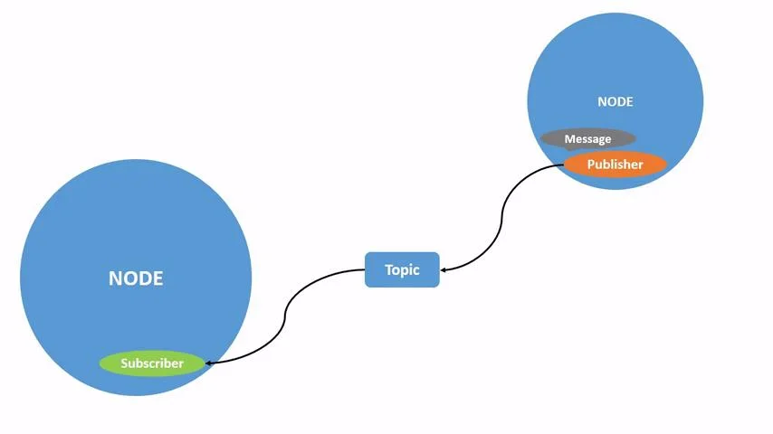
Message¶
- 동기식 양방향 메시지 송수신 방식
-
서비스 요청(Request)을 보내는Service Client, 응답(Response) 을 보내는 쪽을Service Server로구분
-
인터페이스는srv를사용
- 동일한 서비스 서버에 대해 복수의 클라이언트를 연결할 수 있지만, 서비스 응답은 서비스 요청이 있었던 서비스 클라이언트에 대해서만 응답함
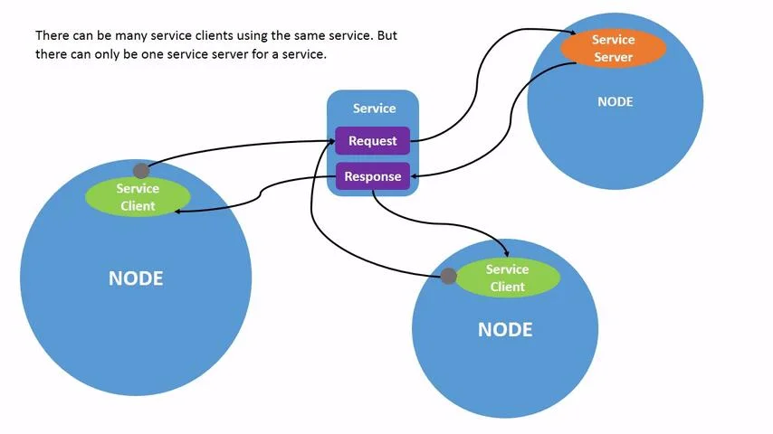
Message¶
- 비동기식, 동기식 양방향 메시지 송수신 방식
-
목표(Goal)를 설정하는Action Client와 목표를 수행하는 Action Server 간의 통신
-
Action Server는 목표 수행 중 중간 결과를 피드백 (Feedback)으로, 최종 결과를 결과(Result)로전송
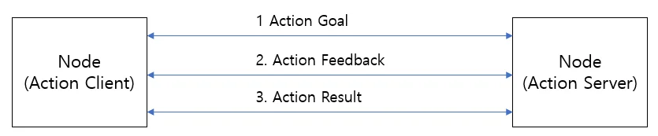
Message¶
-
ROS2에서의 액션은 목표 전달(send_goal), 목표 취소(cancel_goal), 결과 받기(get_result)를 위한 토픽과 서비스 통신을 혼합하여 사용
-
비동기 방식에서 원하는 타이밍에 적절한 액션 수행을 위해 목표 상태(goal_state)에 도입하여, 목표 전달 후 상태 머신을 구동하여 액션 프로세스 추적
-
즉, 액션 목표 전달 이후 액션 상태를 액션 클라이언트에 전달하여, 비동기 및 동기 방식이 혼재된 액션의 처리를 지원
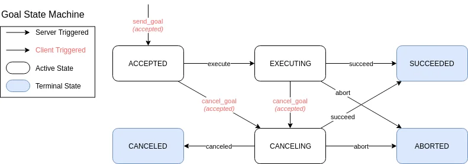
ROS1과ROS2비교
ROS2 Programming
주요역할¶
ROS2에서의 프로그래밍 역할
- ROS2에서"프로그래밍"의 역할은 로봇 시스템을 설계하고 제어하는 데 중요
-
ROS2는 로봇 애플리케이션을 개발하는 데 사용되는 오픈 소스 소프트웨어 프레임워크로, 복잡한 로봇 작업을 분리된 모듈로 나누어 관리할 수 있게해 주며, 이를 통해 다양한 로봇 하드웨어와 소 프트웨어 간의 상호 작용을 쉽게 할 수 있음
-
노드 개발
-
ROS2는 로봇 시스템을 여러 개의 독립적인 노드로 나누어 작업됨
-
각 노드는 특정 작업을 수행하며, 프로그래밍을 통해 이러한 노드를 작성하고, 다른 노드와 데이터를 교환하거나 상호 작용하도록 만들 수 있음
-
예를 들어, 센서 데이터를 처리하는 노드, 로봇의 모터를 제어하는 노드 등 개발 가능
ROS2 Programming
주요역할¶
-
토픽(Topic)과메시지(Message) 관리
-
ROS2에서는 노드 간의 통신이 토픽을 통해 이루어짐
- 각 노드는 특정 토픽을 구독하거나 발행하여 데이터 송수신
-
프로그래밍을 통해 토픽과 메시지 형식을 정의하고, 이를 통해 로봇 시스템의 다양한 부품들이 정보를 교환하도록함
-
서비스(Service)와액션(Action)
-
ROS2는 비동기 작업을 처리하는 서비스를 제공
-
프로그래밍을 통해 특정 요청에 대해 서버와 클라이언트 간의 요청-응답 방식으로 통신 인터페이스 개발 가능
-
또한, 액션을 통해 긴 시간이 걸리는 작업을 비동기적으로 처리 가능
- 예를 들어, 로봇이 경로를 따라가거나 특정 작업을 완료하는 데 시간이 걸릴 때, 이를 처리하기 위한 프로그래밍이 필요
ROS2 Programming
주요역할¶
-
로봇 하드웨어 제어
-
ROS2는 로봇 하드웨어를 제어하는 다양한 라이브러리와 드라이버를 제공
- 프로그래밍을 통해 로봇의 센서, 카메라, 모터, 로봇 팔 등을 제어하는 코드를 작성 가능
-
예를 들어, 로봇 팔을 제어하기 위한 역 기구학(Inverse Kinematics) 알고리즘을 구현하거나, LiDAR 센서 데이터를 처리하는 프로그램을 작성
-
로봇 동작의 논리 구현
-
ROS2는 복잡한 로봇 동작을 관리할 수 있는 강력한 도구들을 제공
- 이를 통해 로봇의 동작을 제어하는 논리를 작성 가능
- 예를 들어, 로봇이 장애물을 회피하면서 목적지로 가는 경로를 계획하는 알고리즘을 프로그래밍하여 개발
ROS2 Programming
주요역할¶
-
시뮬레이션(Simulation)
-
ROS2는Gazebo와 같은 시뮬레이션 도구와 함께 사용되어 실제 하드웨어 없이 로봇을 테스트하고 개발
-
프로그래밍을 통해 시뮬레이션 환경에서 로봇의 동작을 제어하고, 실제 환경에서의 동작을 예측하며, 로봇의 성능을 평가
-
분산 시스템 구현
-
ROS2는 분산 시스템을 기반으로 설계되어 있으며, 이를 통해 여러 컴퓨터가 네트워크를 통해 연결되어 작업을 분담
-
프로그래밍을 통해 여러 장치에서 실행되는ROS2 노드 간의 통신을 설정하고, 분산 환경에서 로봇 시스템을 조정하는 작업 수행
ROS2 Programming
Conclusion¶
효율적인 로봇 개발
- 로봇 하드웨어와 소프트웨어를 연결하는 데 필요한 공통 인터페이스 제공
-
노드라는 모듈화된 구조를 가지며 각각의 노드는 독립적으로 개발, 테스트 및 배포할 수 있어 대규모 시스템에서도 협업이 용이
-
ROS2는 전 세계적인 커뮤니티 지원과 방대한 오픈 소스 패키지를 제공
- ROS2는 센서, 액추에이터, 카메라 등 다양한 로봇 하드웨어와 호환됨
-
Gazebo나rviz와 같은 시뮬레이터와 통합하여 실제 하드웨어 없이도 복잡한 알고리즘을 테스트 하고디버깅 가능
-
Python, C++, MATLAB 등 다양한 언어를 지원하여 개발자가 선호하는 언어를 사용할 수 있음
프로그래밍 규칙 Code Style
코드스타일가이드¶
- 오픈 소스 커뮤니티에서 가장 많이 사용되고 있는 인기 있는 가이드 라인이 존재
- 협업 시 코드가 독성 등을 위하여 코드 스타일 가이드라인을 따르는 것이 필요
기본이름규칙¶
- 파일 이름: 모두 소문자로snake_case 규칙 따름
- ROS2 인터페이스 파일: CamelCases 규칙 따름
- 특정 목적에 의해 만들어지는 파일: package.xml CMakeLists.txt README.md LICENSE CHANGELOG.rst .gitignore .travis.yml *.repos
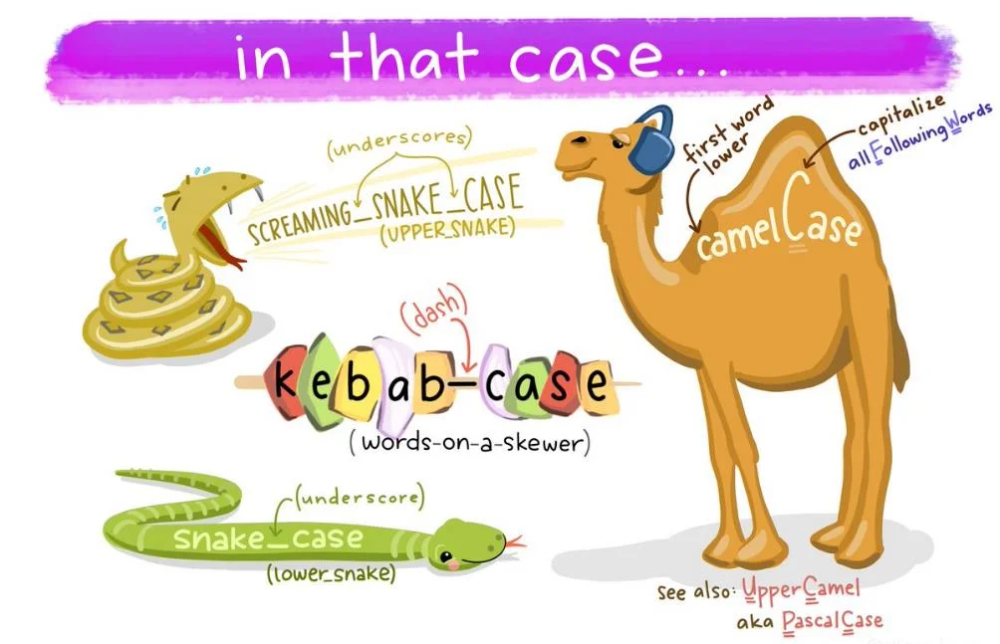
프로그래밍 규칙 Python Style
기본규칙¶
- Python 3(Python 3.5 이상)
라인길이¶
- 최대100 문자
이름규칙(Naming)¶
- CamelCased, snake_case, ALL_CAPITALS 만사용 CamelCased: 타입, 클래스 snake_case: 파일, 패키지, 인터페이스, 모듈, 변수, 함수, 메소드 ALL_CAPITALS: 상수 Python Enhancement Proposals(PEPs)의PEP 8을준수 Wiki 참고: https://wiki.ros.org/PyStyleGuide
프로그래밍 규칙 Python Style
주석(Comments)¶
- 문서 주석:"""
- 구현 주석: #
린터(Linters)¶
- ament_flake8
기타¶
- 모든 문자는 큰따옴표(")가 아닌 작은따옴표(')를사용
공백문자(Spaces) vs. 탭(Tabs)¶
- 기본 들여 쓰기(indent): 공백 문자(space) 4개사용─ 탭(tab)문자 사용 금지
- 괄호(Brace)
- 자료형에 따라 적절한 괄호(대괄호[ ],중괄호{ },소괄호( )) 사용
- list=[ ]
- dictionary={'age': 30, 'name': '홍길동'}
- tuple=( ) K&R BSD GNU
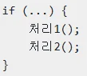
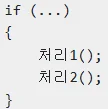
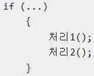
프로그래밍 규칙
C++ Style¶
Google C++ Style Guide + ROS에 맞게 약간의 수정 Wiki 참고: https://wiki.ros.org/PyStyleGuide
기본규칙¶
- C++14 Standard
라인길이¶
- 최대100 문자
이름규칙(Naming)¶
- CamelCased, snake_case, ALL_CAPITALS 만사용
- CamelCased: 타입, 클래스, 구조체, 열거형
- snakecase: 파일, 패키지, 인터페이스, 네임 스페이스, 변수, 함수, 메소드
- ALL_CAPITALS: 상수, 매크로
- 소스 파일: ‘.cpp’ 확장자
- 헤더 파일: ‘.hpp’ 확장자
- 전역 변수(global variable): 되도록 사용X, 사용할 경우’g’접두어 붙이기
- 클래스 멤버 변수(class member variable): 마지막에 밑줄(_) 붙이기
프로그래밍 규칙
공백문자(Spaces) vs. 탭(Tabs)¶
- 기본 들여 쓰기(indent): 공백 문자(space) 2개 └ 탭(tab)문자 사용 금지
- Class의‘public:’, ‘protected:’, ’private:’: 들여쓰기 사용X
괄호(Brace)¶
- 모든if, else, do, while, for 구문: 괄호({}) 사용
주석(Comments)¶
- 문서 주석: / /
- 구현 주석: //
린터(Linters)¶
- C++ 코드 스타일의 자동 오류 검출: ament_cpplint, ament_uncrustify
- 정적 코드 분석: ament_cppcheck
기타¶
- Boost 라이브러리의 사용은 가능한 피하기
-
포인트 구문: char * c;처럼 사용하기 └ char c; 이나char c; 처럼 사용하지 않는다
-
중첩 템플릿: set
> 또는 set < list >처럼 사용하지 않는다
프로그래밍 규칙 파일 명 규칙
- 패키지 명, 스크립트 파일 명은snake_case를사용
- 패키지 생성 시 만들어지는 파일의 경우 규칙을 따르지 않음
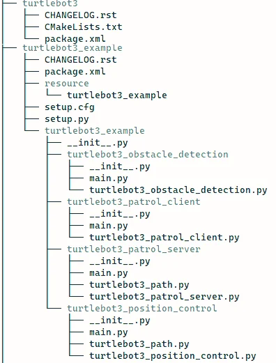
ROS2 Setup Tips 설정 스크립트
-
ROS2 설정 스크립트를 사용하지 않고 ROS2를 실행하여 오류가 발생하는 경우가 종종 있음
-
이를 방지하기 위하여/.bashrc에미리 setup.bash를 선언하여 사용
-
gedit ~/.bashrc 또는nano ~/.bashrc 실행
- 제일 하단에 아래 스크립트 추가 . . .
ROS2 Setup Tips Setup.bash vs local_setup.bash ROS1에서는setup.bash만 사용하여 현재 워크 스페이스의 설정 스크립트를 실행하고, ROS2에서는setup.bash와local_setup.bash 두 가지를 사용하는데, setup.bash와local_setup.bash의 차이를 이해하기 위해서는Underlay와Overlay에 대한 이해가 필요
Underlay¶
- ROS 환경에서 사용 가능한 기본ROS 설치를 말함 (일반적으로ROS Release로 설치되는ROS 코어 및 표준 라이브러리와 도구를 포함)
- Underlay는 시스템에 설치되며, ‘opt/ros/
’ 디렉토리에 위치 - ROS Underlay는 기본 라이브러리, 도구, 메시지 및 서비스 정의+기본ROS 기능을 제공
Overlay¶
- User가설치하거나 개발 중인 패키지를 포함하는 사용자 지정ROS 작업 공간 (사용자는ROS 자체 패키지 및 노드를 추가, 확장)
- 사용자 홈 디렉토리나 사용자가 지정한 다른 디렉토리에 위치할 수 있음
- ROS패키지 개별적 빌드 및 사용자 작업 공간에 설치 가능 (사용자 지정 노드 및 라이브러리를ROS 환경에 추가 가능)
- 사용자 지정 패키지와 노드를 제공
- Overlay 개발 환경은 설치된ROS 패키지들에 의존하기에 Underlay 개발 환경에 종속적
- 설정 스크립트(Setup script)라고 하는setup.bash의 호출 순서 및 사용 방법이 조금씩 달라짐
ROS2 Setup Tips Setup.bash vs local_setup.bash
Setup.bash와local_setup.bash는설정스크립트(Setup script)라고하며, Underlay와Overlay¶
구분 없이 모든 워크 스페이스에 존재하며 각 설정 스크립트마다 사용 목적은 조금씩 다름 local_setup.bash - 현재 작업 중인ROS의 워크 스페이스의 환경 설정에 사용 - 직접적으로 설치된 경로가 아니므로User가 직접 작성하거나 다운로드한ROS패키지와 노 드의 환경 변수를 설정하여 해당 워크 스페이스에 사용자 지정 패키지 및 노드를 실행하는데 필요 - ‘install/local_setup.bash’는 사용자의 워크 스페이스 디렉토리 내에 위치해야하며, 해당 디렉토리에는build, install 디렉토리가 있어야함 setup.bash - ‘/opt/ros/humble’에 설치된ROS의 릴리스 환경을 설정하는데 사용 - 현재 터미널 세션에ROS의 패키지, 라이브러리의 환경 변수를 추가하여 해당ROS 릴리스의 도구 및 패키지를 사용할 수 있게함 → 요약하자면/opt/ros/humble/setup.bash : ROS의기 본 설치 설정 install/local_setup.bash : 사용자가 직접 개발하거나 다운로드한 패키지 설정에 사용
ROS2 Setup Tips
colcon_cd¶
-
터미널 창에서‘colcon_cd’ 명령을 사용하면, 셸(shell)의 현재 워크 스페이스를 패키지 디렉터 리로 빠르게 변경 가능
-
ROS1의ros_cd와 비슷한 기능
- ./bashrc에 아래와 같이 추가
ROS2 Setup Tips
rosdep¶
- 의존성 관리 툴인rosdep 명령어를 사용하면 손쉽게 패키지의 의존성 문제를 해결
- rosdep은 패키지 환경 설정 파일인package.xml의
옵션과 같은 의존성 정보를 확인하여 의존성 패키지들을 설치해 주기 때문에 의존성 패키지가 많은 패키지의 경우, 위 명령어를 사용하면 의존성 패키지 설치 및 관리에 있어서 매우 편하게 사용 가능
ROS2 Setup Tips
ROS_LOCALHOST_ONLY¶
- DDS 기반RMW 구현의 기본 동작은 멀티 캐스트를 통해 도달 가능한 모든 노드를 검색하도록 되어 있음
-
이는 같은 네트워크를 사용할 때 의도치 않게 같은 네트워크 내의 다른 개발자와DDS로 연결됨에 따라 불편함 초래
-
ROS_LOCALHOST_ONLY 환경 변수를True 설정하는 것으로 단일 컴퓨터 안에서만DDS 사용이 가능
- 원치 않는 컴퓨터 간의DDS 통신을 방지하려면 아래와 같은 설정 필요
- ROS2 Humble의 다음 버전인ROS2 Iron 부터는ROS_LOCALHOST_ONLY를 더 이상 사용하지 않음
- 보다 세분화된 옵션을 사용할 수 있는ROS-AUTOMATIC-DISCOVERY-RANGE로변경 (참고 링크: https://docs.ros.org/en/iron/Tutorials/Advanced/Improved-Dynamic-Discovery.html)
- SUBNET, LOCALHOST, OFF, SYSTEM-DEFAULT, ROS-STATIC-PEERS 값으로 세부적 설정 가능
- 해당 기능은 추후ROS2 Jazzy로의 버전이 전시 참고 export ROS_LOCALHOST_ONLY=1
ROS2 Setup Tips ROS_DOMAIN_ID & Namespace
-
ROS2에서 동일 네트워크를 여러 사용자와 공유하는 경우, 동일한ROS_DOMAIN_ID를 설정하여 토픽 정보를 공유할 수 있음
-
독립적인 작업이 필요한 경우, 서로 다른ROS_DOMAIN_ID를 설정하여 정보 공유를 방지할 수 있음
- 또는ROS의Namespace 기능을 활용하여 노드의 고유 이름을 설정하여 정보 공유를 방지할 수 있음
ROS2 Setup Tips ROS_DOMAIN_ID
DDS(Data Distribution Service) 도메인¶
- ROS2는DDS라는 미들 웨어를 사용하여 노드 간의 메시지 전달과 통신을 처리
- ROS_DOMAIN_ID는DDS 도메인을 식별하는 데 사용되며, 이는 네트워크상의 노드들이 서로를 찾고 통신할 수 있도록함
네트워크분리¶
- 서로 다른ROS_DOMAIN_ID 값을 가진 노드들은 서로 통신할 수 없음(여러 팀이나 프로젝트가 같은 네트 워 크 환경에서 독립적으로 작업할 수 있게해 줌)
- 특정 응용 프로그램이나 실험에 필요한 노드들만 통 신하도록 제한할 수 있음
컨피규레이션의유연성¶
- ROS_DOMAIN_ID 설정을 통해 동일한 물리적 네트워크에서 여러ROS2 시스템이 공존할 수 있음 (대규모 로봇 시스템, 다중 로봇 실험, 교육 환경 등에서 유용함)
값범위¶
- ROS_DOMAIN_ID는0부터232까지의 값을 가질 수 있음 (이 범위 내에서 사용자는 적절한ID 값을 선택할 수 있음)
환경변수설정¶
- 일반적으로ROS_DOMAIN_ID는 스크립트나 셸 환경에 서 설정됨
- 예를 들어, os.environ["ROS_DOMAIN_ID"] = "10"과 같은 코드를 통해Python 스크립트 내에서 설정할 수 있으며, 셸에서 export ROS_DOMAIN_ID=10와 같이 설정할 수도 있음
ROS2 Setup Tips ROS_DOMAIN_ID
ROS2 Setup Tips Namespace
ROS2 Namespace¶
- ROS2의노드는 각각 고유의 이름을 가짐
- 각 노드에서 사용하는 토픽, 서비스, 액션, 파라미터 또한 고유의 이름으로 설정됨
- 고유 이름에Namespace를 붙여 독립적으로 자신만의 네트워크를 그룹화 가능
ROS2 Setup Tips Namespace
사용방법¶
- ns 명령 사용 1. ROS의 변수 중 하나인ns(namespace)를입력 2. 복수의namespace 생성
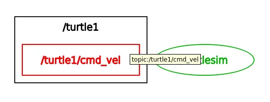
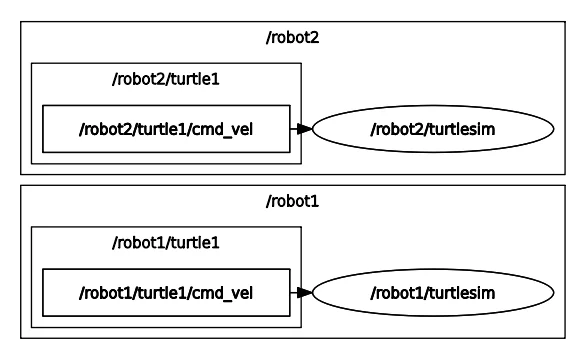
ROS2 Setup Tips Uninstall
ROS2 관련패키지들삭제¶
ROS2 repository 삭제¶
패키지(Package)
- 노드(Node): 실행 가능한 최소한의 프로세서 단위
- 패키지(Package): 하나 이상의 노드가 기능적 단위로 묶인 것
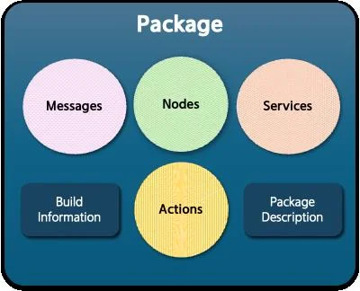
패키지(Package) 구성 요소 - 노드(Node) 특정 작업(로봇 제어, 센서 데이터 처리, 토픽 발 행/구독등)을 수행하는 실행 파일 - 런치 파일(Launch file) 여러 노드를 실행하고, 그들의 매개 변수, 토픽 및 서비스를 구성하는Python 파일 - 설정 파일(Configuration file) YAML 파일로 노드나 노 드 그룹의 매개 변수, 토픽, 서비스 등을 정의 - 라이브러리(Library) C++ 또는Python 라이브러리로, 메시지 정의, 알 고리즘, 드라이버 등 재사용 가능한 기능을 제공 - 자원(Resource) 이미지, 소리, 모델 등의 데이터 파일로 노드나 시 각화 도구에서 사용 - 테스트(Test) 유닛 테스트, 통합 테스트, 시스템 테스트 등으로 패키지의 정확성과 견고성을 검증 - 문서(Documentation) README 파일, 튜토 리얼, API 참조 등으로 사용자가 패키지를 이해하고 사용할 수 있도록 도움
package.xml¶
- 패키지에 대한 메타 정보를 포함하는 파일(패키지의 신분증 역할)
- 이 파일은 패키지 이름, 버전, 저작자, 라이센스 등의 정보를 정의하며, 패키지의 의존성 패키지와 메시지, 서비스, 액션 등의 정의된 인터페이스 정보도 포함
- 사용 목적
- 소스 코드를 실제 실행 가능한 프로그램이나 라이브러리로 변환하기 위해colcon build를 수행하면package.xml을 참조하여, 빌드할 패키지들 사이의 의존성 해석 및 적절한 빌드 순서 결정
- 또한, 패키지 의존성 설치 시rosdep이 이 파일의 정보를 기반으로 함
setup.py & setup.cfg
setup.cfg¶
- 패키지 빌드/설치/배포에 사용(버전/설명/패키지 의존성 관리 등)
- setuptools를 사용하여 패키지를 배포 준비 시 필요한 정보 제공
- Python 패키지에 대한 선언적인 구성 정보를 제공하며, setuptools의 빌드 및 설치 과정에서 활용
- 주로 패키지 버전, 설명 등이 여기에 정의됨
setup.py¶
- setuptools를 사용하여 패키지를 배포할 준비를 할 때, 필요한 정보를 담고 있음
- Python 패키지에 대한 프로 그래 매 틱한 구성 정보를 제공하며, setuptools를 통한 빌드 및 설치 과정에서 사용됨
- Python 패키지의 설치 스크립트
- 주로 패키지 버전, 설명, 의존성 등을 포함한 설치 스크립트 역할
- setuptools 라이브러리를 사용, 패키지를 빌드하고 설치하는 데 필요한 설정 포함
ROS2에서의역할¶
- Python 기반의ROS2 패키지에 대해colcon 은setup.cfg(및setup.py)를 사용하여 패 키 지의 설치를 처리
- setup.cfg, setup.py는setuptools를 통해 패 키 지를 빌드하고 설치하는 방법에 대한 구 성 정보를 제공
- ament_python 패키지 빌드 타입을 사용하는 경우, 파일의 설정이 빌드 과정에 영향을 줄 수 있음
CMakeLists.txt
주요역할¶
- ROS2에서CMakeLists.txt 파일은 패키지의 빌드 규칙을 정의하는 역할
-
ROS2는CMake 빌드 시스템을 사용하여 패키지를 빌드 하며, CMakeLists.txt는CMake가 각 패키지를 어떻게 컴파일하고 링크할지 지시하는 지침을 포함
-
패키지 내 코드를 빌드하는 방법을 기술하는 파일
-
빌드에 필요한 컴파일러, 라이브러리, 소스 파일 등을 명시하고, 실행 파일, 라이브러리, 메시지, 서비스 등의 빌드 대상 및 의존성 관리를 설정
-
이 파일은 빌드 프로세스를 자동화하기 위한CMake 빌드 시스템에 의해 사용
CMakeLists.txt
주요역할¶
- 패키지에 필요한 최소CMake 버전을 지정
- 프로젝트 이름과 버전을 설정
- 빌드해야할 타겟(executables, libraries)을정의
- 필요한 종속성 패키지를 찾고 링크
- 특정 빌드 옵션을 설정하거나 사용자 정의 빌드 규칙 추가
CMakeLists.txt
CMakeLists.txt와setup.py/setup.cfg, package.xml간의비교¶
- CMakeLists.txt
- C/C++ 프로젝트에서 주로 사용됨
- 코드 컴파일 및 링크 설정
- ROS2 메시지 및 서비스 생성 같은 더 광범위한 작업 지원
- 빌드 시 필요한 지침을 담고 있으며, 주로 코드 컴파일과 관련이 깊음
- setup.py/setup.cfg
- Python 패키지의 빌드 및 설치 과정 설정에 사용됨
- 주로Python 관련 설정에 집중
- Pacakge.xml
- 패키지의 메타 데이터와 의존성을 관리하는 데 중점
- CMakeLists.txt와 함께 작동하여ROS2 패키지의 빌드와 배포를 가능하게함
세파일의공통점¶
- CMakeLists.txt, setup.py/setup.cfg, package.xml 모두 패키지의 빌드 및 설치 과정에서 의존성 관리와 설정 정의에 사용 Python을 이용한 패키지 생성 패키지(Package) 설정
pip install .과python3 setup.py install의차이¶
- pip install .
- 의존성 해결: pip는setup.py(setup.cfg) 또는pyproject.toml에 명시된 패키지의 의존성을 자동으로 해결하고 설치.
-
가상 환경 친화적: pip는 현재 활성화된Python 가상 환경에 패키지를 설치하여 시스템 전체 Python 설치를 변경하지 않고 패키지를 안전하게 설치할 수 있게해 줌
-
python3 setup.py install
- 의존성 해결 부족: 패키지 의존성을 자동으로 해결하지 못하므로 수동으로 미리 설치해야함
- 가상 환경과의 호환성 낮음: 이 명령을 사용할 때도 가상 환경에 설치할 수 있지만, pip만큼 가상 환경과의 통합이 자연스럽지는 않음
패키지(Package) 설정
setup.py & setup.cfg차이점¶
접근 방식 프로그래밍 방식으로 패키지 설정을 제공 선언적 방식으로 설정을 제공 유연성 동적 계산과 사용자 정의 명령어를 지원하는 높은 유연성을 제공 보다 간단하고 명확한 패키지 설정을 지향 사용 추세 setup.py의 경우 패키지 의존성을 해결해 주지 않 으므로 가능한 한setup.py 파일은 최소화하거나 제거 현대의Python 패키징은 setup.cfg를 통한 선언적 패키지 설정을 선호
프로그래매틱접근¶
-
setup.py는Python 스크립트 파일로, 패키지의 메타 데이터와 설치 설정을 프로그래밍 방식으로 정의
-
이는setuptools.setup() 함수를 통해 이루어짐(from setuptools import setup)
- 패키지 이름, 버전, 의존성 등을 동적으로 계산하거나 조건부로 직을 적용할 수 있는 높은 유연성 제공
직접실행가능¶
- python setup.py
형식의 명령어로 직접 실행 가능 - ex) Python setup.py install
사용자정의명령지원¶
- 사용자가 필요에 따라setuptools의 명령 확장 기능을 사용하여 새로운 명령어 정의 가능
선언적접근¶
- setup.cfg는INI 포맷의 구성 파일로, 패키지의 설정을 선언적으로 정의
- 패키지의 메타 데이터와 옵션을 보다 단순하고 명확한 형식으로 지정
- setup.py에 비해 정적인 설정에 더 적합하며, 조건부로 직이나 복잡한 계산을 불가함
간소화된설정¶
- 최근의Python 패키징 가이드라인은setup.cfg를 사용하여 패키지 설정을 간소화하는 추세
- setup.py 파일을 최소화하거나 완전히 제거할 수 있도록 권장
- 이를 통해 패키지의 구성이 더 읽기 쉽고 관리하기 쉬워짐
setup.py와의결합사용¶
- setup.cfg를 사용하는 경우에도setup.py 파일이 여전히 필요할 수 있음
- 예를 들어, setuptools 명령어를 실행 시 기본적인setup.py 파일이 사용
- 하지만, setup.py 파일은 매우 간단하게 유지되며, 대부분의 설정은setup.cfg에서 관리됨